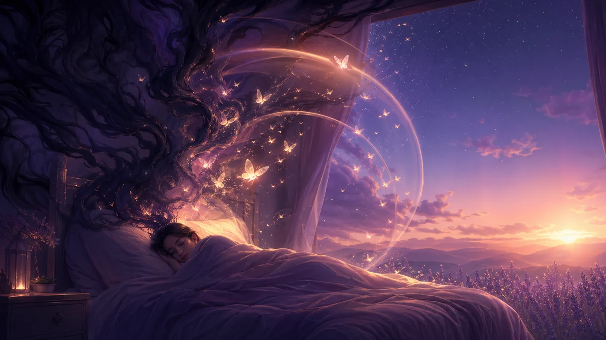

Paralisis del sueno: por que no puedes moverte y como detenerla
Despiertas pero no puedes moverte. Una presencia oscura acecha en la habitacion. Tu pecho se siente aplastado. Esto es la paralisis del sueno - un fenomeno aterrador pero inofensivo que afecta hasta al 8% de la poblacion. Aqui esta todo lo que la ciencia sabe al respecto.
Respuesta rápida
Entiende por qué ocurre la parálisis del sueño y cómo detenerla. Técnicas probadas para prevenir episodios y dormir tranquilo.

Que es la paralisis del sueno y por que ocurre?
La paralisis del sueno es una incapacidad temporal para moverse o hablar que ocurre al despertar o al quedarse dormido. Durante un episodio, estas completamente consciente pero tu cuerpo permanece en el estado paralizado del sueno REM. Esta desconexion entre mente y cuerpo crea una de las experiencias mas aterradoras del sueno humano.
El fenomeno ha sido documentado a lo largo de la historia humana, a menudo atribuido a causas sobrenaturales:
- Europa medieval: Atribuido a demonios o "pesadillas" sentadas en el pecho
- Japon: Llamado "kanashibari", que significa atado con metal
- Terranova: Conocido como el sindrome de la "Vieja Bruja"
- Brasil: Atribuido a "Pisadeira", una anciana que pisotea a los durmientes
Hoy, la ciencia tiene una explicacion clara para este fenomeno, y entenderlo puede ayudar a reducir el miedo asociado con los episodios.
Sintomas de la paralisis del sueno: que se siente
Los episodios de paralisis del sueno tipicamente incluyen varios sintomas distintos:
Sintomas fisicos de paralisis nocturna
- Paralisis muscular completa: Incapacidad de mover extremidades, torso o cabeza
- Presion en el pecho: Sensacion de peso en el pecho, dificultad para respirar
- Movimiento ocular preservado: A menudo el unico movimiento voluntario posible
- Habla imposible: Incapacidad de pedir ayuda o hacer sonidos
Alucinaciones durante la paralisis del sueno
- Sensacion de presencia: Sentir que alguien o algo esta en la habitacion
- Alucinaciones visuales: Figuras de sombra, intrusos o entidades sobrenaturales
- Alucinaciones auditivas: Pasos, respiracion, susurros o zumbidos
- Sensaciones fuera del cuerpo: Sensacion de flotar o verse desde arriba
"Senti algo sentarse en mi cama. No podia moverme, no podia gritar. Una figura oscura se inclino sobre mi. Parecio una eternidad, pero probablemente fueron 30 segundos." - Testimonio comun
Neurociencia de la paralisis del sueno explicada
La paralisis del sueno ocurre durante las transiciones entre etapas del sueno, especificamente involucrando el sueno REM (Movimiento Ocular Rapido). Esto es lo que sucede en tu cerebro:
Durante el sueno REM normal, tu cerebro paraliza tus musculos a traves de un proceso llamado atonia REM. Esto te impide actuar tus suenos - un mecanismo de seguridad crucial. La paralisis del sueno ocurre cuando esta atonia persiste en la vigilia o comienza antes de que estes completamente dormido.
Mecanismo cerebral de la atonia REM
- El area preoptica ventrolateral falla en transicionar correctamente entre estados de sueno y vigilia
- Los neurotransmisores glicina y GABA continuan suprimiendo las neuronas motoras
- La amigdala (centro del miedo) se vuelve hiperactiva, explicando el terror
- La actividad del cortex prefrontal aumenta, creando conciencia durante la paralisis
Investigaciones de la Universidad de Waterloo encontraron que la paralisis del sueno ocurre en aproximadamente 7.6% de la poblacion general, con tasas mas altas en estudiantes (28.3%) y pacientes psiquiatricos (31.9%).
Causas de la paralisis del sueno: factores de riesgo
Aunque cualquiera puede experimentar paralisis del sueno, ciertos factores aumentan significativamente la probabilidad:
Trastornos del sueno que causan paralisis
- Privacion de sueno: El desencadenante mas comun
- Horarios de sueno irregulares: Trabajo por turnos, jet lag, horarios de acostarse inconsistentes
- Dormir boca arriba: La posicion supina aumenta la frecuencia de episodios
- Narcolepsia: La paralisis del sueno es un sintoma clave de este trastorno
Habitos que provocan paralisis del sueno
- Estres y ansiedad: Alta correlacion con la frecuencia de episodios
- Uso de sustancias: Alcohol, cafeina y ciertos medicamentos
- Mala higiene del sueno: Uso de pantallas antes de dormir, ambiente de sueno incomodo
Condiciones medicas asociadas a la paralisis
- Apnea del sueno: Interrupciones de la respiracion durante el sueno
- TEPT: El estres postraumatico aumenta la vulnerabilidad
- Trastornos de ansiedad: Particularmente el trastorno de panico
- Trastorno bipolar: Asociado con patrones de sueno alterados
Hipnopompica
Ocurre al despertar. El tipo mas comun. Tu mente despierta antes de que tu cuerpo se libere de la atonia REM.
~90% de los episodios
Hipnagogica
Ocurre al quedarse dormido. Menos comun pero a menudo mas intensa. La atonia REM comienza mientras aun estas consciente.
~10% de los episodios
Por que vemos sombras y presencias durante la paralisis
Las alucinaciones durante la paralisis del sueno no son aleatorias - siguen patrones predecibles explicados por la neurociencia:
Sensacion de presencia maligna en la habitacion
La sensacion de una presencia amenazante resulta de la hiperactivacion de tu amigdala. Normalmente, el cortex prefrontal modera las respuestas de miedo, pero durante la paralisis del sueno, esta regulacion falla. Tu cerebro interpreta la paralisis como una amenaza y crea una fuente para ese peligro.
Presion en el pecho y dificultad para respirar
La sensacion de presion en el pecho y dificultad para respirar ocurre porque los musculos respiratorios (aunque siguen funcionando) se sienten restringidos. El cerebro interpreta esto como algo presionando hacia abajo, a menudo visualizado como una figura sentada en tu pecho.
Sensacion de flotar fuera del cuerpo
Las sensaciones fuera del cuerpo y de flotacion ocurren cuando el sistema vestibular del cerebro (equilibrio y conciencia espacial) envia senales conflictivas. Tu cerebro espera movimiento pero no recibe retroalimentacion, creando sensaciones de flotar o dejar el cuerpo.
Como salir de la paralisis del sueno rapidamente
Cuando te encuentras en paralisis del sueno, estas tecnicas pueden ayudarte a liberarte:
Tecnicas fisicas para despertar del episodio
- Concentrate en movimientos pequenos: Concentrate en mover tus dedos de manos, pies o musculos faciales. Estos a menudo rompen la paralisis
- Controla tu respiracion: Toma respiraciones lentas y profundas. Esto activa tu sistema nervioso parasimpatico
- Intenta hacer un sonido: Intenta tararear, grunir o hacer cualquier ruido vocal
- Movimiento rapido de ojos: Mueve tus ojos rapidamente de un lado a otro
Estrategias mentales para romper la paralisis
- Mantente calmado: Recuerdate que esto es temporal e inofensivo
- No luches: Forcejear puede prolongar el episodio y aumentar el miedo
- Concentrate en el exterior: Escucha los sonidos ambientales, siente la cama debajo de ti
- Visualizacion: Imaginate moviendote, levantandote, encendiendo las luces
"En el momento en que deje de luchar y solo me concentre en mover mi dedo menique, la paralisis se rompio en segundos."
Como prevenir la paralisis del sueno: 8 consejos
Aunque no puedes garantizar la prevencion, estas estrategias reducen significativamente la frecuencia de episodios:
Higiene del sueno para evitar episodios
- Mantiene horarios de sueno consistentes: Acuestate y despiertate a la misma hora diariamente
- Duerme lo suficiente: Apunta a 7-9 horas por noche
- Evita dormir boca arriba: Dormir de lado reduce significativamente los episodios
- Crea un ambiente propicio para el sueno: Habitacion fresca, oscura, tranquila
Cambios de habitos para reducir la paralisis
- Reduce el estres: Practica meditacion, yoga u otras tecnicas de relajacion
- Limita los estimulantes: Evita la cafeina y el alcohol cerca de la hora de dormir
- Ejercicio regular: Pero no dentro de las 3 horas antes de dormir
- Gestiona el tiempo de pantalla: Sin pantallas 1-2 horas antes de acostarse
Tratamientos para paralisis del sueno cronica
- Lleva un diario de sueno: Rastrea patrones, desencadenantes y frecuencia
- Practica meditacion de sueno: Relajacion guiada antes de acostarse
- Considera TCC-I: Terapia Cognitivo-Conductual para el Insomnio
- Trata las condiciones subyacentes: Trata la ansiedad, depresion o trastornos del sueno
Cuando ver a un especialista en trastornos del sueno
La paralisis del sueno es generalmente benigna, pero consulta a un profesional de salud si:
- Los episodios ocurren multiples veces por semana
- Experimentas somnolencia diurna excesiva
- Los episodios causan ansiedad significativa o evitacion del sueno
- Tienes otros sintomas de narcolepsia (debilidad muscular subita, suenos vividos)
- La paralisis del sueno comenzo despues de un trauma o cambios de medicacion
Un especialista en sueno puede recomendar una polisomnografia (estudio del sueno) para descartar narcolepsia u otros trastornos del sueno. En algunos casos, medicamentos como los ISRS pueden ayudar a reducir la frecuencia de episodios.
"Entender que la paralisis del sueno es un fenomeno natural, aunque incomodo, le quito la mayor parte de su poder sobre mi. El conocimiento es verdaderamente la mejor defensa."
Preguntas frecuentes
Es peligrosa la paralisis del sueno?
No, la paralisis del sueno no es peligrosa. Aunque la experiencia puede ser aterradora, es una condicion benigna que no causa dano fisico. Los episodios tipicamente duran desde unos segundos hasta dos minutos y terminan por si solos.
Puede la paralisis del sueno causar la muerte?
No, la paralisis del sueno no puede causar la muerte. A pesar de la sensacion aterradora de no poder respirar, tu cuerpo continua respirando automaticamente. La sensacion de presion en el pecho es una alucinacion, no una restriccion respiratoria real.
Como puedo detener la paralisis del sueno inmediatamente?
Para salir de la paralisis del sueno, concentrate en mover partes pequenas del cuerpo como tus dedos de manos o pies. Intenta moverlos o cerrar el puno. Algunas personas encuentran que concentrarse en la respiracion o intentar hacer un pequeno sonido ayuda. Mantente calmado y recuerda que el episodio terminara pronto.
Fuentes / Para Ir Más Lejos
- APA Dictionary of Psychology:Dream
- Nielsen (2010):Dream analysis and classification (review, PubMed)
- DreamResearch.net:G. William Domhoff (dream research overview)
- Mayo Clinic:Sleep paralysis (symptoms & causes)
- Sharpless & Barber (2011):Sleep paralysis prevalence (PubMed)
- Sleep Foundation:Sleep paralysis overview
Actualizado el 26 de diciembre de 2025
Símbolos relacionados
Explora los símbolos mencionados en este artículo:
Para seguir leyendo
Recursos relacionados sobre el mismo tema
Como Recordar tus Suenos: 10 Tecnicas Efectivas
Descubre metodos cientificamente probados para mejorar tu recuerdo de suenos y nunca mas olvidar tus suenos al despertar. Tecnicas simples que puedes aplicar esta noche.
GuíaIncubacion de suenos: como sonar exactamente lo que quieres esta noche
Aprende el arte antiguo de la incubacion onirica para resolver problemas y estimular tu creatividad.
GuíaPesadillas: Causas, Significado y Cómo Detenerlas
¿Por qué tenemos pesadillas? Descubre las causas de los malos sueños, su significado y técnicas probadas para reducir su frecuencia y dormir mejor.